Experiment 03 - Data#
Create data splits
root - INFO Split data and make diagnostic plots
Arguments#
FN_INTENSITIES: str = 'data/dev_datasets/HeLa_6070/protein_groups_wide_N50.csv' # Sample (rows), features (columns)
index_col: Union[str, int] = 0 # Can be either a string or position (default 0 for first column), or a list of these.
column_names: List[str] = ["Gene Names"] # Manuelly set column names (of Index object in columns)
fn_rawfile_metadata: str = 'data/dev_datasets/HeLa_6070/files_selected_metadata_N50.csv' # metadata for samples (rows)
feat_prevalence: Union[int, float] = 0.25 # Minimum number or fraction of feature prevalence across samples to be kept
sample_completeness: Union[int, float] = 0.5 # Minimum number or fraction of total requested features per Sample
select_N: int = None # only use latest N samples
sample_N: bool = False # if select_N, sample N randomly instead of using latest N
random_state: int = 42 # random state for reproducibility of splits
logarithm: str = 'log2' # Log transformation of initial data (select one of the existing in numpy)
folder_experiment: str = 'runs/example' # folder to save figures and data dumps
folder_data: str = '' # specify special data directory if needed
file_format: str = 'csv' # file format of create splits, default pickle (pkl)
use_every_nth_xtick: int = 1 # use every nth xtick in plots (default 1, i.e. every xtick is kept)
# metadata -> defaults for metadata extracted from machine data, used for plotting
meta_date_col: str = None # date column in meta data
meta_cat_col: str = None # category column in meta data
# train, validation and test data splits
frac_non_train: float = 0.1 # fraction of non training data (validation and test split)
frac_mnar: float = 0.0 # fraction of missing not at random data, rest: missing completely at random
prop_sample_w_sim: float = 1.0 # proportion of samples with simulated missing values
feat_name_display: str = None # display name for feature name (e.g. 'protein group')
# Parameters
FN_INTENSITIES = "https://raw.githubusercontent.com/RasmussenLab/njab/HEAD/docs/tutorial/data/alzheimer/proteome.csv"
sample_completeness = 0.5
feat_prevalence = 0.25
column_names = ["protein groups"]
index_col = 0
meta_cat_col = "_collection site"
meta_date_col = None
frac_mnar = 0.25
frac_non_train = 0.1
fn_rawfile_metadata = "https://raw.githubusercontent.com/RasmussenLab/njab/HEAD/docs/tutorial/data/alzheimer/meta.csv"
folder_experiment = "runs/alzheimer_study"
root - INFO Removed from global namespace: FN_INTENSITIES
root - INFO Removed from global namespace: index_col
root - INFO Removed from global namespace: column_names
root - INFO Removed from global namespace: fn_rawfile_metadata
root - INFO Removed from global namespace: feat_prevalence
root - INFO Removed from global namespace: sample_completeness
root - INFO Removed from global namespace: select_N
root - INFO Removed from global namespace: sample_N
root - INFO Removed from global namespace: random_state
root - INFO Removed from global namespace: logarithm
root - INFO Removed from global namespace: folder_experiment
root - INFO Removed from global namespace: folder_data
root - INFO Removed from global namespace: file_format
root - INFO Removed from global namespace: use_every_nth_xtick
root - INFO Removed from global namespace: meta_date_col
root - INFO Removed from global namespace: meta_cat_col
root - INFO Removed from global namespace: frac_non_train
root - INFO Removed from global namespace: frac_mnar
root - INFO Removed from global namespace: prop_sample_w_sim
root - INFO Removed from global namespace: feat_name_display
{'FN_INTENSITIES': 'https://raw.githubusercontent.com/RasmussenLab/njab/HEAD/docs/tutorial/data/alzheimer/proteome.csv',
'index_col': 0,
'column_names': ['protein groups'],
'fn_rawfile_metadata': 'https://raw.githubusercontent.com/RasmussenLab/njab/HEAD/docs/tutorial/data/alzheimer/meta.csv',
'feat_prevalence': 0.25,
'sample_completeness': 0.5,
'select_N': None,
'sample_N': False,
'random_state': 42,
'logarithm': 'log2',
'folder_experiment': 'runs/alzheimer_study',
'folder_data': '',
'file_format': 'csv',
'use_every_nth_xtick': 1,
'meta_date_col': None,
'meta_cat_col': '_collection site',
'frac_non_train': 0.1,
'frac_mnar': 0.25,
'prop_sample_w_sim': 1.0,
'feat_name_display': None}
{'FN_INTENSITIES': 'https://raw.githubusercontent.com/RasmussenLab/njab/HEAD/docs/tutorial/data/alzheimer/proteome.csv',
'column_names': ['protein groups'],
'data': PosixPath('runs/alzheimer_study/data'),
'feat_name_display': None,
'feat_prevalence': 0.25,
'file_format': 'csv',
'fn_rawfile_metadata': 'https://raw.githubusercontent.com/RasmussenLab/njab/HEAD/docs/tutorial/data/alzheimer/meta.csv',
'folder_data': '',
'folder_experiment': PosixPath('runs/alzheimer_study'),
'frac_mnar': 0.25,
'frac_non_train': 0.1,
'index_col': 0,
'logarithm': 'log2',
'meta_cat_col': '_collection site',
'meta_date_col': None,
'out_figures': PosixPath('runs/alzheimer_study/figures'),
'out_folder': PosixPath('runs/alzheimer_study'),
'out_metrics': PosixPath('runs/alzheimer_study'),
'out_models': PosixPath('runs/alzheimer_study'),
'out_preds': PosixPath('runs/alzheimer_study/preds'),
'prop_sample_w_sim': 1.0,
'random_state': 42,
'sample_N': False,
'sample_completeness': 0.5,
'select_N': None,
'use_every_nth_xtick': 1}
[0]
Raw data#
process arguments
root - INFO args.FN_INTENSITIES = 'https://raw.githubusercontent.com/RasmussenLab/njab/HEAD/docs/tutorial/data/alzheimer/proteome.csv'
root - INFO File format (extension): csv (!specifies data loading function!)
pimmslearn.io.load - WARNING Passed unknown kwargs: {}
| protein groups | A0A024QZX5;A0A087X1N8;P35237 | A0A024R0T9;K7ER74;P02655 | A0A024R3B9;E9PJL7;E9PNH7;E9PR44;E9PRA8;P02511 | A0A024R3W6;A0A024R412;O60462;O60462-2;O60462-3;O60462-4;O60462-5;Q7LBX6;X5D2Q8 | A0A024R644;A0A0A0MRU5;A0A1B0GWI2;O75503 | A0A075B6H7 | A0A075B6H9 | A0A075B6I0 | A0A075B6I1 | A0A075B6I6 | A0A075B6I9 | A0A075B6J1 | A0A075B6J9 | A0A075B6K4 | A0A075B6K5 | A0A075B6P5;P01615 | ... | Q9Y4L1 | Q9Y5F6;Q9Y5F6-2 | Q9Y5I4;Q9Y5I4-2 | Q9Y5Y7 | Q9Y617 | Q9Y646 | Q9Y653;Q9Y653-2;Q9Y653-3 | Q9Y696 | Q9Y6C2 | Q9Y6N6 | Q9Y6N7;Q9Y6N7-2;Q9Y6N7-4 | Q9Y6R7 | Q9Y6X5 | Q9Y6Y8;Q9Y6Y8-2 | Q9Y6Y9 | S4R3U6 |
|---|---|---|---|---|---|---|---|---|---|---|---|---|---|---|---|---|---|---|---|---|---|---|---|---|---|---|---|---|---|---|---|---|---|
| Sample ID | |||||||||||||||||||||||||||||||||
| Sample_000 | 15.912 | 16.852 | NaN | 15.570 | 16.481 | 17.301 | 20.246 | 16.764 | 17.584 | 16.988 | 20.054 | 15.164 | NaN | 16.148 | 17.343 | 17.016 | ... | 18.598 | 16.469 | 17.187 | 18.840 | 16.859 | 19.322 | 16.012 | 15.178 | NaN | 15.050 | 16.842 | 19.863 | NaN | 19.563 | 12.837 | 12.805 |
| Sample_001 | 15.936 | 16.874 | NaN | 15.519 | 16.387 | 13.796 | 19.941 | 18.786 | 17.144 | NaN | 19.067 | NaN | 16.188 | 16.127 | 17.417 | 17.779 | ... | 18.476 | 15.782 | 17.447 | 19.195 | 16.799 | 19.190 | 15.528 | 15.576 | NaN | 14.833 | 16.597 | 20.299 | 15.556 | 19.386 | 13.970 | 12.442 |
| Sample_002 | 16.111 | 14.523 | NaN | 15.935 | 16.416 | 18.175 | 19.251 | 16.832 | 15.671 | 17.012 | 18.569 | NaN | NaN | 15.387 | 17.236 | 17.431 | ... | 18.991 | 17.015 | 17.410 | 19.088 | 16.288 | 19.702 | 15.229 | 14.728 | 13.757 | 15.118 | 17.440 | 19.598 | 15.735 | 20.447 | 12.636 | 12.505 |
| Sample_003 | 16.107 | 17.032 | NaN | 15.802 | 16.979 | 15.963 | 19.628 | 17.852 | 18.877 | 14.182 | 18.985 | 13.050 | 13.438 | 16.565 | 16.267 | 16.990 | ... | 18.560 | 16.529 | 17.545 | 18.715 | 17.075 | 19.760 | 15.495 | 14.590 | 14.682 | 15.140 | 17.356 | 19.429 | NaN | 20.216 | 12.627 | 12.445 |
| Sample_004 | 15.603 | 15.331 | NaN | 15.375 | 16.679 | 15.473 | 20.450 | 18.682 | 17.081 | 14.140 | 19.686 | 15.703 | 14.495 | 16.418 | 17.390 | 17.493 | ... | 18.305 | 16.285 | 17.297 | 18.668 | 16.736 | 19.624 | 14.757 | 15.094 | 14.048 | 15.256 | 17.075 | 19.582 | 15.328 | 19.867 | 13.145 | 12.235 |
| ... | ... | ... | ... | ... | ... | ... | ... | ... | ... | ... | ... | ... | ... | ... | ... | ... | ... | ... | ... | ... | ... | ... | ... | ... | ... | ... | ... | ... | ... | ... | ... | ... | ... |
| Sample_205 | 15.682 | 16.886 | 14.061 | 14.910 | 16.482 | NaN | 17.705 | 17.039 | NaN | 16.413 | 19.102 | NaN | 16.064 | 15.350 | 17.154 | 17.175 | ... | 18.290 | 15.968 | 17.104 | 18.726 | 15.808 | 19.894 | 15.235 | 15.684 | 14.236 | 15.415 | 17.551 | 17.922 | 16.340 | 19.928 | 12.929 | 11.802 |
| Sample_206 | 15.798 | 17.554 | 15.266 | 15.600 | 15.938 | NaN | 18.154 | 18.152 | 16.503 | 16.860 | 18.538 | NaN | 15.288 | 16.582 | 17.902 | 19.575 | ... | 17.977 | 16.885 | 17.109 | 18.460 | 15.035 | 20.015 | 15.422 | 16.106 | NaN | 15.345 | 17.084 | 18.708 | 14.249 | 19.433 | NaN | NaN |
| Sample_207 | 15.739 | 16.877 | NaN | 15.469 | 16.898 | NaN | 18.636 | 17.950 | 16.321 | 16.401 | 18.849 | NaN | 17.580 | 15.768 | 17.519 | 19.306 | ... | 18.149 | 15.878 | 16.938 | 19.502 | 16.283 | 20.306 | 15.808 | 16.098 | 14.403 | 15.715 | 16.586 | 18.725 | 16.138 | 19.599 | 13.637 | 11.174 |
| Sample_208 | 15.477 | 16.779 | NaN | 14.995 | 16.132 | NaN | 14.908 | 17.530 | NaN | 16.119 | 18.368 | NaN | 15.202 | 17.560 | 17.502 | 18.977 | ... | 17.881 | 15.554 | 17.155 | 18.892 | 15.920 | 20.203 | 15.157 | 16.712 | NaN | 14.640 | 16.533 | 19.411 | 15.807 | 19.545 | 13.216 | NaN |
| Sample_209 | 15.727 | 17.261 | 15.344 | 15.175 | 16.235 | NaN | 17.893 | 17.744 | 16.371 | 15.780 | 18.806 | NaN | 16.532 | 16.338 | 16.989 | 18.688 | ... | 18.125 | 16.575 | 16.776 | 18.675 | 15.713 | 20.042 | 15.237 | 15.652 | 15.211 | 14.205 | 16.749 | 19.275 | 15.732 | 19.577 | 11.042 | 11.791 |
210 rows × 1542 columns
Text(0, 0.5, 'Frequency')
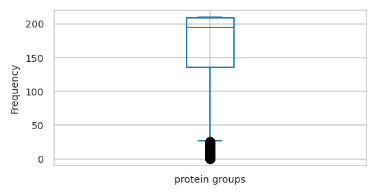
| feat_stats | sample_stats | |
|---|---|---|
| count | 1,542.000 | 210.000 |
| mean | 165.477 | 1,215.071 |
| std | 57.677 | 105.904 |
| min | 1.000 | 801.000 |
| 25% | 136.000 | 1,155.000 |
| 50% | 195.000 | 1,236.000 |
| 75% | 209.000 | 1,297.750 |
| max | 210.000 | 1,377.000 |
In case there are multiple features for each intensity values (currenlty: peptide sequence and charge), combine the column names to a single str index.
The Collaborative Modeling approach will need a single feature column.
Machine metadata#
read from file using ThermoRawFileParser
| _collection site | _age at CSF collection | _gender | _t-tau [ng/L] | _p-tau [ng/L] | _Abeta-42 [ng/L] | _Abeta-40 [ng/L] | _Abeta-42/Abeta-40 ratio | _primary biochemical AD classification | _clinical AD diagnosis | _MMSE score | |
|---|---|---|---|---|---|---|---|---|---|---|---|
| Sample ID | |||||||||||
| Sample_000 | Sweden | 71.000 | f | 703.000 | 85.000 | 562.000 | NaN | NaN | biochemical control | NaN | NaN |
| Sample_001 | Sweden | 77.000 | m | 518.000 | 91.000 | 334.000 | NaN | NaN | biochemical AD | NaN | NaN |
| Sample_002 | Sweden | 75.000 | m | 974.000 | 87.000 | 515.000 | NaN | NaN | biochemical AD | NaN | NaN |
| Sample_003 | Sweden | 72.000 | f | 950.000 | 109.000 | 394.000 | NaN | NaN | biochemical AD | NaN | NaN |
| Sample_004 | Sweden | 63.000 | f | 873.000 | 88.000 | 234.000 | NaN | NaN | biochemical AD | NaN | NaN |
| ... | ... | ... | ... | ... | ... | ... | ... | ... | ... | ... | ... |
| Sample_205 | Berlin | 69.000 | f | 1,945.000 | NaN | 699.000 | 12,140.000 | 0.058 | biochemical AD | AD | 17.000 |
| Sample_206 | Berlin | 73.000 | m | 299.000 | NaN | 1,420.000 | 16,571.000 | 0.086 | biochemical control | non-AD | 28.000 |
| Sample_207 | Berlin | 71.000 | f | 262.000 | NaN | 639.000 | 9,663.000 | 0.066 | biochemical control | non-AD | 28.000 |
| Sample_208 | Berlin | 83.000 | m | 289.000 | NaN | 1,436.000 | 11,285.000 | 0.127 | biochemical control | non-AD | 24.000 |
| Sample_209 | Berlin | 63.000 | f | 591.000 | NaN | 1,299.000 | 11,232.000 | 0.116 | biochemical control | non-AD | 29.000 |
210 rows × 11 columns
| _collection site | _age at CSF collection | _gender | _t-tau [ng/L] | _p-tau [ng/L] | _Abeta-42 [ng/L] | _Abeta-40 [ng/L] | _Abeta-42/Abeta-40 ratio | _primary biochemical AD classification | _clinical AD diagnosis | _MMSE score | PlaceholderTime | |
|---|---|---|---|---|---|---|---|---|---|---|---|---|
| Sample ID | ||||||||||||
| Sample_000 | Sweden | 71.000 | f | 703.000 | 85.000 | 562.000 | NaN | NaN | biochemical control | NaN | NaN | 0 |
| Sample_001 | Sweden | 77.000 | m | 518.000 | 91.000 | 334.000 | NaN | NaN | biochemical AD | NaN | NaN | 1 |
| Sample_002 | Sweden | 75.000 | m | 974.000 | 87.000 | 515.000 | NaN | NaN | biochemical AD | NaN | NaN | 2 |
| Sample_003 | Sweden | 72.000 | f | 950.000 | 109.000 | 394.000 | NaN | NaN | biochemical AD | NaN | NaN | 3 |
| Sample_004 | Sweden | 63.000 | f | 873.000 | 88.000 | 234.000 | NaN | NaN | biochemical AD | NaN | NaN | 4 |
| ... | ... | ... | ... | ... | ... | ... | ... | ... | ... | ... | ... | ... |
| Sample_205 | Berlin | 69.000 | f | 1,945.000 | NaN | 699.000 | 12,140.000 | 0.058 | biochemical AD | AD | 17.000 | 205 |
| Sample_206 | Berlin | 73.000 | m | 299.000 | NaN | 1,420.000 | 16,571.000 | 0.086 | biochemical control | non-AD | 28.000 | 206 |
| Sample_207 | Berlin | 71.000 | f | 262.000 | NaN | 639.000 | 9,663.000 | 0.066 | biochemical control | non-AD | 28.000 | 207 |
| Sample_208 | Berlin | 83.000 | m | 289.000 | NaN | 1,436.000 | 11,285.000 | 0.127 | biochemical control | non-AD | 24.000 | 208 |
| Sample_209 | Berlin | 63.000 | f | 591.000 | NaN | 1,299.000 | 11,232.000 | 0.116 | biochemical control | non-AD | 29.000 | 209 |
210 rows × 12 columns
| _age at CSF collection | _t-tau [ng/L] | _p-tau [ng/L] | _Abeta-42 [ng/L] | _Abeta-40 [ng/L] | _Abeta-42/Abeta-40 ratio | _MMSE score | PlaceholderTime | |
|---|---|---|---|---|---|---|---|---|
| count | 197.000 | 181.000 | 98.000 | 181.000 | 121.000 | 121.000 | 83.000 | 210.000 |
| mean | 67.726 | 553.624 | 72.449 | 687.105 | 10,505.843 | 0.079 | 25.723 | 104.500 |
| std | 12.123 | 372.272 | 40.869 | 381.119 | 5,192.847 | 0.047 | 4.028 | 60.766 |
| min | 20.000 | 78.000 | 16.000 | 154.000 | 2,450.000 | 0.016 | 12.000 | 0.000 |
| 5% | 42.800 | 149.000 | 24.000 | 249.000 | 3,959.000 | 0.031 | 17.100 | 10.450 |
| 15% | 60.000 | 218.000 | 33.000 | 349.000 | 5,748.000 | 0.037 | 21.000 | 31.350 |
| 25% | 63.000 | 275.000 | 36.750 | 417.000 | 6,608.000 | 0.045 | 23.500 | 52.250 |
| 35% | 67.000 | 320.000 | 45.900 | 478.000 | 7,866.000 | 0.052 | 25.700 | 73.150 |
| 45% | 69.000 | 383.000 | 60.300 | 544.000 | 9,016.000 | 0.063 | 27.000 | 94.050 |
| 50% | 70.000 | 441.000 | 73.500 | 593.000 | 9,515.000 | 0.067 | 27.000 | 104.500 |
| 55% | 71.000 | 519.000 | 77.000 | 629.000 | 10,171.000 | 0.078 | 28.000 | 114.950 |
| 65% | 72.000 | 654.000 | 87.000 | 740.000 | 11,466.000 | 0.091 | 28.000 | 135.850 |
| 75% | 74.000 | 802.000 | 93.750 | 892.000 | 12,967.000 | 0.105 | 29.000 | 156.750 |
| 85% | 77.000 | 920.000 | 109.000 | 1,016.000 | 16,531.000 | 0.119 | 29.000 | 177.650 |
| 95% | 83.000 | 1,183.000 | 144.150 | 1,436.000 | 20,554.000 | 0.144 | 30.000 | 198.550 |
| max | 88.000 | 2,390.000 | 233.000 | 2,206.000 | 26,080.000 | 0.370 | 30.000 | 209.000 |
| _collection site | _age at CSF collection | _gender | _t-tau [ng/L] | _p-tau [ng/L] | _Abeta-42 [ng/L] | _Abeta-40 [ng/L] | _Abeta-42/Abeta-40 ratio | _primary biochemical AD classification | _clinical AD diagnosis | _MMSE score | PlaceholderTime | |
|---|---|---|---|---|---|---|---|---|---|---|---|---|
| count | 197 | 197.000 | 197 | 181.000 | 98.000 | 181.000 | 121.000 | 121.000 | 197 | 137 | 83.000 | 210.000 |
| unique | 4 | NaN | 2 | NaN | NaN | NaN | NaN | NaN | 2 | 2 | NaN | NaN |
| top | Berlin | NaN | f | NaN | NaN | NaN | NaN | NaN | biochemical control | non-AD | NaN | NaN |
| freq | 83 | NaN | 99 | NaN | NaN | NaN | NaN | NaN | 109 | 88 | NaN | NaN |
| mean | NaN | 67.726 | NaN | 553.624 | 72.449 | 687.105 | 10,505.843 | 0.079 | NaN | NaN | 25.723 | 104.500 |
| std | NaN | 12.123 | NaN | 372.272 | 40.869 | 381.119 | 5,192.847 | 0.047 | NaN | NaN | 4.028 | 60.766 |
| min | NaN | 20.000 | NaN | 78.000 | 16.000 | 154.000 | 2,450.000 | 0.016 | NaN | NaN | 12.000 | 0.000 |
| 25% | NaN | 63.000 | NaN | 275.000 | 36.750 | 417.000 | 6,608.000 | 0.045 | NaN | NaN | 23.500 | 52.250 |
| 50% | NaN | 70.000 | NaN | 441.000 | 73.500 | 593.000 | 9,515.000 | 0.067 | NaN | NaN | 27.000 | 104.500 |
| 75% | NaN | 74.000 | NaN | 802.000 | 93.750 | 892.000 | 12,967.000 | 0.105 | NaN | NaN | 29.000 | 156.750 |
| max | NaN | 88.000 | NaN | 2,390.000 | 233.000 | 2,206.000 | 26,080.000 | 0.370 | NaN | NaN | 30.000 | 209.000 |
subset with variation
| _collection site | _age at CSF collection | _gender | _t-tau [ng/L] | _p-tau [ng/L] | _Abeta-42 [ng/L] | _Abeta-40 [ng/L] | _primary biochemical AD classification | _clinical AD diagnosis | _MMSE score | PlaceholderTime | |
|---|---|---|---|---|---|---|---|---|---|---|---|
| count | 197 | 197.000 | 197 | 181.000 | 98.000 | 181.000 | 121.000 | 197 | 137 | 83.000 | 210.000 |
| unique | 4 | NaN | 2 | NaN | NaN | NaN | NaN | 2 | 2 | NaN | NaN |
| top | Berlin | NaN | f | NaN | NaN | NaN | NaN | biochemical control | non-AD | NaN | NaN |
| freq | 83 | NaN | 99 | NaN | NaN | NaN | NaN | 109 | 88 | NaN | NaN |
| mean | NaN | 67.726 | NaN | 553.624 | 72.449 | 687.105 | 10,505.843 | NaN | NaN | 25.723 | 104.500 |
| std | NaN | 12.123 | NaN | 372.272 | 40.869 | 381.119 | 5,192.847 | NaN | NaN | 4.028 | 60.766 |
| min | NaN | 20.000 | NaN | 78.000 | 16.000 | 154.000 | 2,450.000 | NaN | NaN | 12.000 | 0.000 |
| 25% | NaN | 63.000 | NaN | 275.000 | 36.750 | 417.000 | 6,608.000 | NaN | NaN | 23.500 | 52.250 |
| 50% | NaN | 70.000 | NaN | 441.000 | 73.500 | 593.000 | 9,515.000 | NaN | NaN | 27.000 | 104.500 |
| 75% | NaN | 74.000 | NaN | 802.000 | 93.750 | 892.000 | 12,967.000 | NaN | NaN | 29.000 | 156.750 |
| max | NaN | 88.000 | NaN | 2,390.000 | 233.000 | 2,206.000 | 26,080.000 | NaN | NaN | 30.000 | 209.000 |
Ensure unique indices
Select a subset of samples if specified (reduce the number of samples)#
select features if
select_Nis specifed (for now)for interpolation to make sense, it is best to select a consecutive number of samples:
take N most recent samples (-> check that this makes sense for your case)
First Step: Select features by prevalence#
feat_prevalenceacross samples
/bin/bash: line 1: add: command not found
/bin/bash: -c: line 1: syntax error near unexpected token `('
/bin/bash: -c: line 1: ` check that feature prevalence is greater equal to 3 (otherwise train, val, test split is not possible)'
root - INFO Current number of samples: 210
root - INFO Feature has to be present in at least 25.00% of samples
root - INFO Feature has to be present in at least 52 of samples
root - INFO Drop 121 features
| protein groups | A0A024QZX5;A0A087X1N8;P35237 | A0A024R0T9;K7ER74;P02655 | A0A024R3W6;A0A024R412;O60462;O60462-2;O60462-3;O60462-4;O60462-5;Q7LBX6;X5D2Q8 | A0A024R644;A0A0A0MRU5;A0A1B0GWI2;O75503 | A0A075B6H7 | A0A075B6H9 | A0A075B6I0 | A0A075B6I1 | A0A075B6I6 | A0A075B6I9 | A0A075B6J9 | A0A075B6K4 | A0A075B6K5 | A0A075B6P5;P01615 | A0A075B6Q5 | A0A075B6R2 | ... | Q9Y4L1 | Q9Y5F6;Q9Y5F6-2 | Q9Y5I4;Q9Y5I4-2 | Q9Y5Y7 | Q9Y617 | Q9Y646 | Q9Y653;Q9Y653-2;Q9Y653-3 | Q9Y696 | Q9Y6C2 | Q9Y6N6 | Q9Y6N7;Q9Y6N7-2;Q9Y6N7-4 | Q9Y6R7 | Q9Y6X5 | Q9Y6Y8;Q9Y6Y8-2 | Q9Y6Y9 | S4R3U6 |
|---|---|---|---|---|---|---|---|---|---|---|---|---|---|---|---|---|---|---|---|---|---|---|---|---|---|---|---|---|---|---|---|---|---|
| Sample ID | |||||||||||||||||||||||||||||||||
| Sample_000 | 15.912 | 16.852 | 15.570 | 16.481 | 17.301 | 20.246 | 16.764 | 17.584 | 16.988 | 20.054 | NaN | 16.148 | 17.343 | 17.016 | NaN | NaN | ... | 18.598 | 16.469 | 17.187 | 18.840 | 16.859 | 19.322 | 16.012 | 15.178 | NaN | 15.050 | 16.842 | 19.863 | NaN | 19.563 | 12.837 | 12.805 |
| Sample_001 | 15.936 | 16.874 | 15.519 | 16.387 | 13.796 | 19.941 | 18.786 | 17.144 | NaN | 19.067 | 16.188 | 16.127 | 17.417 | 17.779 | NaN | NaN | ... | 18.476 | 15.782 | 17.447 | 19.195 | 16.799 | 19.190 | 15.528 | 15.576 | NaN | 14.833 | 16.597 | 20.299 | 15.556 | 19.386 | 13.970 | 12.442 |
| Sample_002 | 16.111 | 14.523 | 15.935 | 16.416 | 18.175 | 19.251 | 16.832 | 15.671 | 17.012 | 18.569 | NaN | 15.387 | 17.236 | 17.431 | 15.128 | 16.280 | ... | 18.991 | 17.015 | 17.410 | 19.088 | 16.288 | 19.702 | 15.229 | 14.728 | 13.757 | 15.118 | 17.440 | 19.598 | 15.735 | 20.447 | 12.636 | 12.505 |
| Sample_003 | 16.107 | 17.032 | 15.802 | 16.979 | 15.963 | 19.628 | 17.852 | 18.877 | 14.182 | 18.985 | 13.438 | 16.565 | 16.267 | 16.990 | NaN | 16.777 | ... | 18.560 | 16.529 | 17.545 | 18.715 | 17.075 | 19.760 | 15.495 | 14.590 | 14.682 | 15.140 | 17.356 | 19.429 | NaN | 20.216 | 12.627 | 12.445 |
| Sample_004 | 15.603 | 15.331 | 15.375 | 16.679 | 15.473 | 20.450 | 18.682 | 17.081 | 14.140 | 19.686 | 14.495 | 16.418 | 17.390 | 17.493 | NaN | 17.497 | ... | 18.305 | 16.285 | 17.297 | 18.668 | 16.736 | 19.624 | 14.757 | 15.094 | 14.048 | 15.256 | 17.075 | 19.582 | 15.328 | 19.867 | 13.145 | 12.235 |
| ... | ... | ... | ... | ... | ... | ... | ... | ... | ... | ... | ... | ... | ... | ... | ... | ... | ... | ... | ... | ... | ... | ... | ... | ... | ... | ... | ... | ... | ... | ... | ... | ... | ... |
| Sample_205 | 15.682 | 16.886 | 14.910 | 16.482 | NaN | 17.705 | 17.039 | NaN | 16.413 | 19.102 | 16.064 | 15.350 | 17.154 | 17.175 | NaN | 16.598 | ... | 18.290 | 15.968 | 17.104 | 18.726 | 15.808 | 19.894 | 15.235 | 15.684 | 14.236 | 15.415 | 17.551 | 17.922 | 16.340 | 19.928 | 12.929 | 11.802 |
| Sample_206 | 15.798 | 17.554 | 15.600 | 15.938 | NaN | 18.154 | 18.152 | 16.503 | 16.860 | 18.538 | 15.288 | 16.582 | 17.902 | 19.575 | NaN | 17.070 | ... | 17.977 | 16.885 | 17.109 | 18.460 | 15.035 | 20.015 | 15.422 | 16.106 | NaN | 15.345 | 17.084 | 18.708 | 14.249 | 19.433 | NaN | NaN |
| Sample_207 | 15.739 | 16.877 | 15.469 | 16.898 | NaN | 18.636 | 17.950 | 16.321 | 16.401 | 18.849 | 17.580 | 15.768 | 17.519 | 19.306 | 16.884 | 16.065 | ... | 18.149 | 15.878 | 16.938 | 19.502 | 16.283 | 20.306 | 15.808 | 16.098 | 14.403 | 15.715 | 16.586 | 18.725 | 16.138 | 19.599 | 13.637 | 11.174 |
| Sample_208 | 15.477 | 16.779 | 14.995 | 16.132 | NaN | 14.908 | 17.530 | NaN | 16.119 | 18.368 | 15.202 | 17.560 | 17.502 | 18.977 | NaN | NaN | ... | 17.881 | 15.554 | 17.155 | 18.892 | 15.920 | 20.203 | 15.157 | 16.712 | NaN | 14.640 | 16.533 | 19.411 | 15.807 | 19.545 | 13.216 | NaN |
| Sample_209 | 15.727 | 17.261 | 15.175 | 16.235 | NaN | 17.893 | 17.744 | 16.371 | 15.780 | 18.806 | 16.532 | 16.338 | 16.989 | 18.688 | 15.680 | 16.036 | ... | 18.125 | 16.575 | 16.776 | 18.675 | 15.713 | 20.042 | 15.237 | 15.652 | 15.211 | 14.205 | 16.749 | 19.275 | 15.732 | 19.577 | 11.042 | 11.791 |
210 rows × 1421 columns
| feat_stats | sample_stats | |
|---|---|---|
| count | 1,421.000 | 210.000 |
| mean | 177.346 | 1,200.043 |
| std | 42.341 | 100.703 |
| min | 52.000 | 800.000 |
| 25% | 155.000 | 1,147.000 |
| 50% | 200.000 | 1,220.000 |
| 75% | 210.000 | 1,278.750 |
| max | 210.000 | 1,342.000 |
Second step - Sample selection#
Select samples based on completeness
root - INFO Fraction of minimum sample completeness over all features specified with: 0.5
This translates to a minimum number of features per sample (to be included): 710
count 210.000
mean 1,200.043
std 100.703
min 800.000
25% 1,147.000
50% 1,220.000
75% 1,278.750
max 1,342.000
dtype: float64
root - INFO Drop 0 of 210 initial samples.
Histogram of features per sample#
pimmslearn.plotting - INFO Saved Figures to runs/alzheimer_study/figures/0_1_hist_features_per_sample
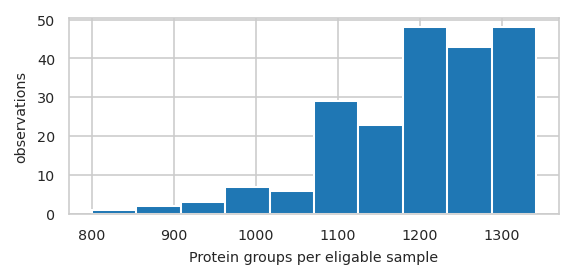
pimmslearn.plotting - INFO Saved Figures to runs/alzheimer_study/figures/0_1_feature_prevalence
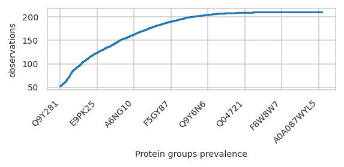
Number off observations accross feature value#
pimmslearn.plotting - INFO Saved Figures to runs/alzheimer_study/figures/0_1_intensity_distribution_overall
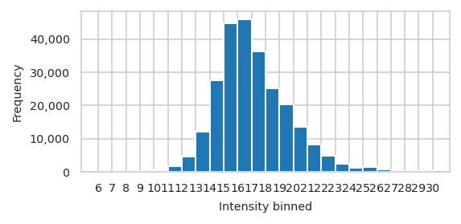
pimmslearn.plotting - INFO Saved Figures to runs/alzheimer_study/figures/0_1_intensity_median_vs_prop_missing_scatter
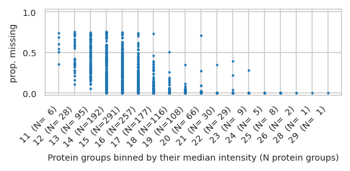
/home/runner/work/pimms/pimms/project/.snakemake/conda/55a2c7840b22b1fcd4b6a7d712ec2f3f_/lib/python3.12/site-packages/pimmslearn/plotting/data.py:323: FutureWarning: Series.__getitem__ treating keys as positions is deprecated. In a future version, integer keys will always be treated as labels (consistent with DataFrame behavior). To access a value by position, use `ser.iloc[pos]`
ax = ax[0] # returned series due to by argument?
pimmslearn.plotting - INFO Saved Figures to runs/alzheimer_study/figures/0_1_intensity_median_vs_prop_missing_boxplot
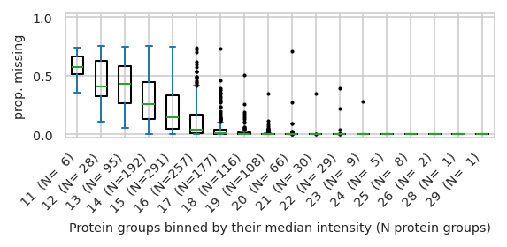
Interactive and Single plots#
| Sample ID | principal component 1 (11.62 %) | principal component 2 (10.17 %) | _collection site | _age at CSF collection | _gender | _t-tau [ng/L] | _p-tau [ng/L] | _Abeta-42 [ng/L] | _Abeta-40 [ng/L] | _Abeta-42/Abeta-40 ratio | _primary biochemical AD classification | _clinical AD diagnosis | _MMSE score | PlaceholderTime | identified protein groups | |
|---|---|---|---|---|---|---|---|---|---|---|---|---|---|---|---|---|
| 0 | Sample_000 | -16.681 | -8.492 | Sweden | 71.000 | f | 703.000 | 85.000 | 562.000 | NaN | NaN | biochemical control | NaN | NaN | 0 | 1,205 |
| 1 | Sample_001 | -12.801 | -5.119 | Sweden | 77.000 | m | 518.000 | 91.000 | 334.000 | NaN | NaN | biochemical AD | NaN | NaN | 1 | 1,219 |
| 2 | Sample_002 | -13.784 | -12.951 | Sweden | 75.000 | m | 974.000 | 87.000 | 515.000 | NaN | NaN | biochemical AD | NaN | NaN | 2 | 1,256 |
| 3 | Sample_003 | -16.440 | -10.112 | Sweden | 72.000 | f | 950.000 | 109.000 | 394.000 | NaN | NaN | biochemical AD | NaN | NaN | 3 | 1,225 |
| 4 | Sample_004 | -15.129 | -6.471 | Sweden | 63.000 | f | 873.000 | 88.000 | 234.000 | NaN | NaN | biochemical AD | NaN | NaN | 4 | 1,209 |
| ... | ... | ... | ... | ... | ... | ... | ... | ... | ... | ... | ... | ... | ... | ... | ... | ... |
| 205 | Sample_205 | 6.682 | -15.297 | Berlin | 69.000 | f | 1,945.000 | NaN | 699.000 | 12,140.000 | 0.058 | biochemical AD | AD | 17.000 | 205 | 1,339 |
| 206 | Sample_206 | 7.405 | -6.126 | Berlin | 73.000 | m | 299.000 | NaN | 1,420.000 | 16,571.000 | 0.086 | biochemical control | non-AD | 28.000 | 206 | 1,258 |
| 207 | Sample_207 | 7.329 | -11.041 | Berlin | 71.000 | f | 262.000 | NaN | 639.000 | 9,663.000 | 0.066 | biochemical control | non-AD | 28.000 | 207 | 1,301 |
| 208 | Sample_208 | 8.058 | -5.501 | Berlin | 83.000 | m | 289.000 | NaN | 1,436.000 | 11,285.000 | 0.127 | biochemical control | non-AD | 24.000 | 208 | 1,259 |
| 209 | Sample_209 | 3.657 | -7.572 | Berlin | 63.000 | f | 591.000 | NaN | 1,299.000 | 11,232.000 | 0.116 | biochemical control | non-AD | 29.000 | 209 | 1,247 |
210 rows × 16 columns
| count | unique | top | freq | mean | std | min | 25% | 50% | 75% | max | |
|---|---|---|---|---|---|---|---|---|---|---|---|
| Sample ID | 210 | 210 | Sample_000 | 1 | NaN | NaN | NaN | NaN | NaN | NaN | NaN |
| principal component 1 (11.62 %) | 210.000 | NaN | NaN | NaN | -0.000 | 8.981 | -17.550 | -11.061 | 4.635 | 6.655 | 9.125 |
| principal component 2 (10.17 %) | 210.000 | NaN | NaN | NaN | -0.000 | 8.404 | -18.953 | -6.310 | 0.305 | 5.485 | 23.359 |
| _collection site | 197 | 4 | Berlin | 83 | NaN | NaN | NaN | NaN | NaN | NaN | NaN |
| _age at CSF collection | 197.000 | NaN | NaN | NaN | 67.726 | 12.123 | 20.000 | 63.000 | 70.000 | 74.000 | 88.000 |
| _gender | 197 | 2 | f | 99 | NaN | NaN | NaN | NaN | NaN | NaN | NaN |
| _t-tau [ng/L] | 181.000 | NaN | NaN | NaN | 553.624 | 372.272 | 78.000 | 275.000 | 441.000 | 802.000 | 2,390.000 |
| _p-tau [ng/L] | 98.000 | NaN | NaN | NaN | 72.449 | 40.869 | 16.000 | 36.750 | 73.500 | 93.750 | 233.000 |
| _Abeta-42 [ng/L] | 181.000 | NaN | NaN | NaN | 687.105 | 381.119 | 154.000 | 417.000 | 593.000 | 892.000 | 2,206.000 |
| _Abeta-40 [ng/L] | 121.000 | NaN | NaN | NaN | 10,505.843 | 5,192.847 | 2,450.000 | 6,608.000 | 9,515.000 | 12,967.000 | 26,080.000 |
| _Abeta-42/Abeta-40 ratio | 121.000 | NaN | NaN | NaN | 0.079 | 0.047 | 0.016 | 0.045 | 0.067 | 0.105 | 0.370 |
| _primary biochemical AD classification | 197 | 2 | biochemical control | 109 | NaN | NaN | NaN | NaN | NaN | NaN | NaN |
| _clinical AD diagnosis | 137 | 2 | non-AD | 88 | NaN | NaN | NaN | NaN | NaN | NaN | NaN |
| _MMSE score | 83.000 | NaN | NaN | NaN | 25.723 | 4.028 | 12.000 | 23.500 | 27.000 | 29.000 | 30.000 |
| PlaceholderTime | 210.000 | NaN | NaN | NaN | 104.500 | 60.766 | 0.000 | 52.250 | 104.500 | 156.750 | 209.000 |
| identified protein groups | 210.000 | NaN | NaN | NaN | 1,200.043 | 100.703 | 800.000 | 1,147.000 | 1,220.000 | 1,278.750 | 1,342.000 |
pimmslearn.plotting - INFO Saved Figures to runs/alzheimer_study/figures/0_1_pca_sample_by__collection_site
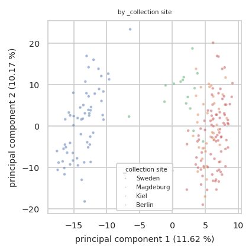
size: number of features in a single sample
pimmslearn.plotting - INFO Saved Figures to runs/alzheimer_study/figures/0_1_pca_sample_by_identified_protein_groups.pdf
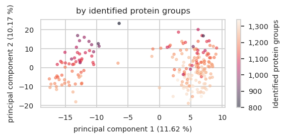
choreographer.browsers.chromium - INFO Chromium init'ed with kwargs {}
choreographer.browsers.chromium - INFO Found chromium path: /usr/bin/google-chrome
choreographer.utils._tmpfile - INFO Temp directory created: /tmp/tmppi_5n3mb.
choreographer.browser_async - INFO Opening browser.
choreographer.utils._tmpfile - INFO Temp directory created: /tmp/tmpadydh1k_.
choreographer.browsers.chromium - INFO ldd failed. e: Command '['ldd', '/usr/bin/google-chrome']' returned non-zero exit status 1., stderr: None
choreographer.browsers.chromium - INFO Temporary directory at: /tmp/tmpadydh1k_
kaleido.kaleido - INFO Conforming 1 to file:///tmp/tmppi_5n3mb/index.html
kaleido.kaleido - INFO Waiting on all navigates
kaleido.kaleido - INFO All navigates done, putting them all in queue.
kaleido.kaleido - INFO Getting tab from queue (has 1)
kaleido.kaleido - INFO Got 32C5
kaleido._kaleido_tab - INFO Processing First_two_Principal_Components_of_1421_protein_groups_for_210_samples.pdf
kaleido._kaleido_tab - INFO Sending big command for First_two_Principal_Components_of_1421_protein_groups_for_210_samples.pdf.
kaleido._kaleido_tab - INFO Sent big command for First_two_Principal_Components_of_1421_protein_groups_for_210_samples.pdf.
kaleido.kaleido - INFO Reloading tab 32C5 before return.
kaleido.kaleido - INFO Putting tab 32C5 back (queue size: 0).
kaleido.kaleido - INFO Waiting for all cleanups to finish.
kaleido.kaleido - INFO Exiting Kaleido
choreographer.browser_async - INFO Closing browser.
choreographer.browser_async - INFO Closing browser.
choreographer.utils._tmpfile - INFO TemporaryDirectory.cleanup() worked.
choreographer.utils._tmpfile - INFO shutil.rmtree worked.
kaleido.kaleido - INFO Cancelling tasks.
kaleido.kaleido - INFO Exiting Kaleido/Choreo
choreographer.utils._tmpfile - INFO TemporaryDirectory.cleanup() worked.
choreographer.utils._tmpfile - INFO shutil.rmtree worked.
choreographer.utils._tmpfile - INFO TemporaryDirectory.cleanup() worked.
choreographer.utils._tmpfile - INFO shutil.rmtree worked.
kaleido.kaleido - INFO Cancelling tasks.
kaleido.kaleido - INFO Exiting Kaleido/Choreo
choreographer.utils._tmpfile - INFO TemporaryDirectory.cleanup() worked.
choreographer.utils._tmpfile - INFO shutil.rmtree worked.
Sample Medians and percentiles#
| protein groups | A0A024QZX5;A0A087X1N8;P35237 | A0A024R0T9;K7ER74;P02655 | A0A024R3W6;A0A024R412;O60462;O60462-2;O60462-3;O60462-4;O60462-5;Q7LBX6;X5D2Q8 | A0A024R644;A0A0A0MRU5;A0A1B0GWI2;O75503 | A0A075B6H7 | A0A075B6H9 | A0A075B6I0 | A0A075B6I1 | A0A075B6I6 | A0A075B6I9 | A0A075B6J9 | A0A075B6K4 | A0A075B6K5 | A0A075B6P5;P01615 | A0A075B6Q5 | A0A075B6R2 | ... | Q9Y4L1 | Q9Y5F6;Q9Y5F6-2 | Q9Y5I4;Q9Y5I4-2 | Q9Y5Y7 | Q9Y617 | Q9Y646 | Q9Y653;Q9Y653-2;Q9Y653-3 | Q9Y696 | Q9Y6C2 | Q9Y6N6 | Q9Y6N7;Q9Y6N7-2;Q9Y6N7-4 | Q9Y6R7 | Q9Y6X5 | Q9Y6Y8;Q9Y6Y8-2 | Q9Y6Y9 | S4R3U6 |
|---|---|---|---|---|---|---|---|---|---|---|---|---|---|---|---|---|---|---|---|---|---|---|---|---|---|---|---|---|---|---|---|---|---|
| Sample ID | |||||||||||||||||||||||||||||||||
| Sample_000 | 15.912 | 16.852 | 15.570 | 16.481 | 17.301 | 20.246 | 16.764 | 17.584 | 16.988 | 20.054 | NaN | 16.148 | 17.343 | 17.016 | NaN | NaN | ... | 18.598 | 16.469 | 17.187 | 18.840 | 16.859 | 19.322 | 16.012 | 15.178 | NaN | 15.050 | 16.842 | 19.863 | NaN | 19.563 | 12.837 | 12.805 |
| Sample_001 | 15.936 | 16.874 | 15.519 | 16.387 | 13.796 | 19.941 | 18.786 | 17.144 | NaN | 19.067 | 16.188 | 16.127 | 17.417 | 17.779 | NaN | NaN | ... | 18.476 | 15.782 | 17.447 | 19.195 | 16.799 | 19.190 | 15.528 | 15.576 | NaN | 14.833 | 16.597 | 20.299 | 15.556 | 19.386 | 13.970 | 12.442 |
| Sample_002 | 16.111 | 14.523 | 15.935 | 16.416 | 18.175 | 19.251 | 16.832 | 15.671 | 17.012 | 18.569 | NaN | 15.387 | 17.236 | 17.431 | 15.128 | 16.280 | ... | 18.991 | 17.015 | 17.410 | 19.088 | 16.288 | 19.702 | 15.229 | 14.728 | 13.757 | 15.118 | 17.440 | 19.598 | 15.735 | 20.447 | 12.636 | 12.505 |
| Sample_003 | 16.107 | 17.032 | 15.802 | 16.979 | 15.963 | 19.628 | 17.852 | 18.877 | 14.182 | 18.985 | 13.438 | 16.565 | 16.267 | 16.990 | NaN | 16.777 | ... | 18.560 | 16.529 | 17.545 | 18.715 | 17.075 | 19.760 | 15.495 | 14.590 | 14.682 | 15.140 | 17.356 | 19.429 | NaN | 20.216 | 12.627 | 12.445 |
| Sample_004 | 15.603 | 15.331 | 15.375 | 16.679 | 15.473 | 20.450 | 18.682 | 17.081 | 14.140 | 19.686 | 14.495 | 16.418 | 17.390 | 17.493 | NaN | 17.497 | ... | 18.305 | 16.285 | 17.297 | 18.668 | 16.736 | 19.624 | 14.757 | 15.094 | 14.048 | 15.256 | 17.075 | 19.582 | 15.328 | 19.867 | 13.145 | 12.235 |
5 rows × 1421 columns
| PlaceholderTime | 0 | 1 | 2 | 3 | 4 | 5 | 6 | 7 | 8 | 9 | 10 | 11 | 12 | 13 | 14 | 15 | ... | 194 | 195 | 196 | 197 | 198 | 199 | 200 | 201 | 202 | 203 | 204 | 205 | 206 | 207 | 208 | 209 |
|---|---|---|---|---|---|---|---|---|---|---|---|---|---|---|---|---|---|---|---|---|---|---|---|---|---|---|---|---|---|---|---|---|---|
| A0A024QZX5;A0A087X1N8;P35237 | 15.912 | 15.936 | 16.111 | 16.107 | 15.603 | 15.812 | 15.500 | 15.221 | 15.980 | 15.679 | 15.981 | 15.983 | 15.949 | 15.475 | 15.706 | 15.744 | ... | 14.994 | 15.211 | 14.609 | 15.119 | 15.455 | 15.614 | NaN | 15.863 | 15.656 | 15.401 | NaN | 15.682 | 15.798 | 15.739 | 15.477 | 15.727 |
| A0A024R0T9;K7ER74;P02655 | 16.852 | 16.874 | 14.523 | 17.032 | 15.331 | 18.614 | 17.409 | 17.684 | 16.386 | 16.590 | 15.948 | 16.669 | 17.694 | 17.726 | 17.252 | 17.340 | ... | 17.586 | 18.131 | 18.024 | 18.273 | 17.390 | 17.834 | 17.310 | 16.615 | 17.953 | 18.199 | 17.279 | 16.886 | 17.554 | 16.877 | 16.779 | 17.261 |
| A0A024R3W6;A0A024R412;O60462;O60462-2;O60462-3;O60462-4;O60462-5;Q7LBX6;X5D2Q8 | 15.570 | 15.519 | 15.935 | 15.802 | 15.375 | 15.624 | 15.912 | 15.385 | 15.894 | 15.375 | 15.993 | 15.654 | 15.751 | 15.191 | 15.469 | 14.457 | ... | NaN | 15.143 | NaN | 15.399 | NaN | 16.456 | NaN | 15.932 | 14.859 | 15.125 | 15.287 | 14.910 | 15.600 | 15.469 | 14.995 | 15.175 |
| A0A024R644;A0A0A0MRU5;A0A1B0GWI2;O75503 | 16.481 | 16.387 | 16.416 | 16.979 | 16.679 | 15.958 | 16.234 | 16.418 | 16.271 | 16.210 | 16.742 | 16.159 | 15.790 | 16.403 | 16.433 | 16.024 | ... | 16.300 | 16.166 | 15.935 | 16.335 | 16.116 | 16.107 | 15.954 | 16.030 | 16.498 | 16.513 | 16.513 | 16.482 | 15.938 | 16.898 | 16.132 | 16.235 |
| A0A075B6H7 | 17.301 | 13.796 | 18.175 | 15.963 | 15.473 | 18.317 | NaN | 17.214 | 17.794 | NaN | 16.166 | 16.681 | NaN | 17.284 | 17.545 | 16.999 | ... | NaN | NaN | 12.612 | NaN | NaN | NaN | NaN | 16.483 | 14.835 | 13.569 | 14.483 | NaN | NaN | NaN | NaN | NaN |
| ... | ... | ... | ... | ... | ... | ... | ... | ... | ... | ... | ... | ... | ... | ... | ... | ... | ... | ... | ... | ... | ... | ... | ... | ... | ... | ... | ... | ... | ... | ... | ... | ... | ... |
| Q9Y6R7 | 19.863 | 20.299 | 19.598 | 19.429 | 19.582 | 19.130 | 18.690 | 18.996 | 19.993 | 18.550 | 19.727 | 19.216 | 20.987 | 19.837 | 18.966 | 19.874 | ... | 18.905 | 17.909 | 18.558 | 19.101 | 17.878 | 19.403 | 19.233 | 18.816 | 18.902 | 18.813 | 19.456 | 17.922 | 18.708 | 18.725 | 19.411 | 19.275 |
| Q9Y6X5 | NaN | 15.556 | 15.735 | NaN | 15.328 | NaN | NaN | NaN | NaN | NaN | 15.187 | 15.403 | 14.979 | 14.827 | NaN | 15.801 | ... | 16.177 | 14.916 | 15.355 | 15.554 | 14.801 | 16.005 | 15.895 | 15.562 | 16.089 | 15.669 | 15.012 | 16.340 | 14.249 | 16.138 | 15.807 | 15.732 |
| Q9Y6Y8;Q9Y6Y8-2 | 19.563 | 19.386 | 20.447 | 20.216 | 19.867 | 19.633 | 20.057 | 18.680 | 20.023 | 19.948 | 19.047 | 20.855 | 19.851 | 20.344 | 19.532 | 21.643 | ... | 19.364 | 19.283 | 19.382 | 19.690 | 18.413 | 19.706 | 18.582 | 19.809 | 20.204 | 19.418 | 17.847 | 19.928 | 19.433 | 19.599 | 19.545 | 19.577 |
| Q9Y6Y9 | 12.837 | 13.970 | 12.636 | 12.627 | 13.145 | 12.224 | 12.817 | 12.897 | NaN | 13.685 | 13.478 | 12.923 | NaN | NaN | NaN | NaN | ... | 12.398 | 12.172 | 11.766 | NaN | NaN | NaN | NaN | NaN | 12.707 | 12.978 | 12.287 | 12.929 | NaN | 13.637 | 13.216 | 11.042 |
| S4R3U6 | 12.805 | 12.442 | 12.505 | 12.445 | 12.235 | NaN | NaN | NaN | 13.008 | 12.279 | 12.534 | 11.679 | NaN | NaN | NaN | NaN | ... | NaN | 10.033 | NaN | 10.309 | NaN | 11.089 | NaN | 10.133 | 11.529 | 10.498 | 10.563 | 11.802 | NaN | 11.174 | NaN | 11.791 |
1421 rows × 210 columns
pimmslearn.plotting - INFO Saved Figures to runs/alzheimer_study/figures/0_1_median_boxplot
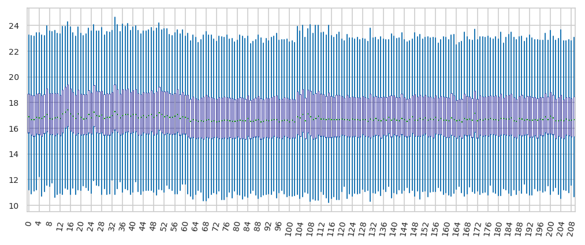
Percentiles of intensities in dataset
count 252,009.000
mean 17.119
std 2.567
min 6.695
5% 13.564
10% 14.280
15% 14.739
20% 15.098
25% 15.404
30% 15.677
35% 15.933
40% 16.194
45% 16.458
50% 16.733
55% 17.026
60% 17.337
65% 17.688
70% 18.087
75% 18.561
80% 19.128
85% 19.729
90% 20.519
95% 21.770
max 30.735
dtype: float64
Plot sample median over time#
check if points are equally spaced (probably QC samples are run in close proximity)
the machine will be not use for intermediate periods
the closer the labels are there denser the samples are measured around that time.
Feature frequency in data#
root - INFO Total number of samples in data: 210
Recalculate feature frequency after selecting samples
protein groups
A0A024QZX5;A0A087X1N8;P35237 197
A0A024R0T9;K7ER74;P02655 208
A0A024R3W6;A0A024R412;O60462;O60462-2;O60462-3;O60462-4;O60462-5;Q7LBX6;X5D2Q8 185
A0A024R644;A0A0A0MRU5;A0A1B0GWI2;O75503 208
A0A075B6H7 97
..
Q9Y6R7 210
Q9Y6X5 186
Q9Y6Y8;Q9Y6Y8-2 210
Q9Y6Y9 126
S4R3U6 135
Name: freq, Length: 1421, dtype: int64
Split: Train, validation and test data#
Select features as described in
Lazar, Cosmin, Laurent Gatto, Myriam Ferro, Christophe Bruley, and Thomas Burger. 2016. “Accounting for the Multiple Natures of Missing Values in Label-Free Quantitative Proteomics Data Sets to Compare Imputation Strategies.” Journal of Proteome Research 15 (4): 1116–25.
select
frac_mnarbased on threshold matrix on quantile of overall frac of data to be used for validation and test data split, e.g. 0.1 = quantile(0.1)select frac_mnar from intensities selected using threshold matrix
root - INFO splits = DataSplits(train_X=None, val_y=None, test_y=None)
{'is_wide_format': 'bool',
'train_X': 'pd.DataFrame',
'val_y': 'pd.DataFrame',
'test_y': 'pd.DataFrame'}
Create some target values by sampling X% of the validation and test data. Simulated missing values are not used for validation and testing.
| intensity | ||
|---|---|---|
| Sample ID | protein groups | |
| Sample_000 | A0A024QZX5;A0A087X1N8;P35237 | 15.912 |
| A0A024R0T9;K7ER74;P02655 | 16.852 | |
| A0A024R3W6;A0A024R412;O60462;O60462-2;O60462-3;O60462-4;O60462-5;Q7LBX6;X5D2Q8 | 15.570 | |
| A0A024R644;A0A0A0MRU5;A0A1B0GWI2;O75503 | 16.481 | |
| A0A075B6H7 | 17.301 |
/home/runner/work/pimms/pimms/project/.snakemake/conda/55a2c7840b22b1fcd4b6a7d712ec2f3f_/lib/python3.12/site-packages/pimmslearn/sampling.py:208: FutureWarning:
Calling float on a single element Series is deprecated and will raise a TypeError in the future. Use float(ser.iloc[0]) instead
/home/runner/work/pimms/pimms/project/.snakemake/conda/55a2c7840b22b1fcd4b6a7d712ec2f3f_/lib/python3.12/site-packages/pimmslearn/sampling.py:209: FutureWarning:
Calling float on a single element Series is deprecated and will raise a TypeError in the future. Use float(ser.iloc[0]) instead
pimmslearn.sampling - INFO int(N * frac_non_train) = 25,200
pimmslearn.sampling - INFO len(fake_na_mnar) = 6,300
pimmslearn.sampling - INFO len(splits.train_X) = 245,709
pimmslearn.sampling - INFO len(fake_na) = 25,200
pimmslearn.sampling - INFO len(fake_na_mcar) = 18,900
root - INFO splits.train_X.shape = (226809,) - splits.val_y.shape = (12600,) - splits.test_y.shape = (12600,)
pimmslearn.plotting - INFO Saved Figures to runs/alzheimer_study/figures/0_2_mnar_mcar_histograms.pdf
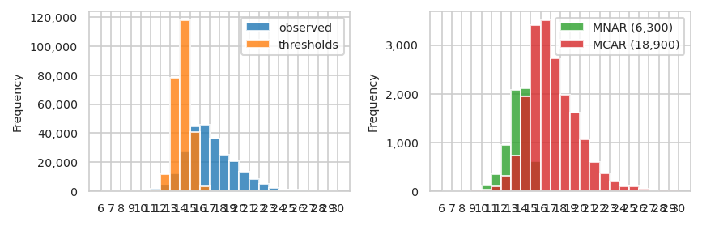
/home/runner/work/pimms/pimms/project/.snakemake/conda/55a2c7840b22b1fcd4b6a7d712ec2f3f_/lib/python3.12/site-packages/pimmslearn/pandas/__init__.py:320: FutureWarning:
The default of observed=False is deprecated and will be changed to True in a future version of pandas. Pass observed=False to retain current behavior or observed=True to adopt the future default and silence this warning.
/home/runner/work/pimms/pimms/project/.snakemake/conda/55a2c7840b22b1fcd4b6a7d712ec2f3f_/lib/python3.12/site-packages/pimmslearn/pandas/__init__.py:320: FutureWarning:
The default of observed=False is deprecated and will be changed to True in a future version of pandas. Pass observed=False to retain current behavior or observed=True to adopt the future default and silence this warning.
/home/runner/work/pimms/pimms/project/.snakemake/conda/55a2c7840b22b1fcd4b6a7d712ec2f3f_/lib/python3.12/site-packages/pimmslearn/pandas/__init__.py:320: FutureWarning:
The default of observed=False is deprecated and will be changed to True in a future version of pandas. Pass observed=False to retain current behavior or observed=True to adopt the future default and silence this warning.
/home/runner/work/pimms/pimms/project/.snakemake/conda/55a2c7840b22b1fcd4b6a7d712ec2f3f_/lib/python3.12/site-packages/pimmslearn/pandas/__init__.py:320: FutureWarning:
The default of observed=False is deprecated and will be changed to True in a future version of pandas. Pass observed=False to retain current behavior or observed=True to adopt the future default and silence this warning.
| observed | threshold | MNAR (6,300) | MCAR (18,900) | |
|---|---|---|---|---|
| bin | ||||
| (6, 7] | 1 | 0 | 0 | 1 |
| (7, 8] | 4 | 0 | 2 | 0 |
| (8, 9] | 39 | 0 | 8 | 2 |
| (9, 10] | 136 | 0 | 20 | 13 |
| (10, 11] | 529 | 3 | 114 | 29 |
| (11, 12] | 1,731 | 387 | 353 | 103 |
| (12, 13] | 4,644 | 11,870 | 953 | 310 |
| (13, 14] | 12,161 | 77,911 | 2,085 | 729 |
| (14, 15] | 27,515 | 117,843 | 2,120 | 1,951 |
| (15, 16] | 44,723 | 40,668 | 611 | 3,406 |
| (16, 17] | 45,981 | 3,261 | 33 | 3,511 |
| (17, 18] | 36,274 | 63 | 1 | 2,733 |
| (18, 19] | 25,049 | 3 | 0 | 1,975 |
| (19, 20] | 20,386 | 0 | 0 | 1,619 |
| (20, 21] | 13,495 | 0 | 0 | 1,061 |
| (21, 22] | 8,234 | 0 | 0 | 602 |
| (22, 23] | 4,885 | 0 | 0 | 367 |
| (23, 24] | 2,459 | 0 | 0 | 197 |
| (24, 25] | 1,237 | 0 | 0 | 98 |
| (25, 26] | 1,392 | 0 | 0 | 108 |
| (26, 27] | 643 | 0 | 0 | 46 |
| (27, 28] | 88 | 0 | 0 | 4 |
| (28, 29] | 216 | 0 | 0 | 15 |
| (29, 30] | 163 | 0 | 0 | 18 |
| (30, 31] | 24 | 0 | 0 | 2 |
Keep simulated samples only in a subset of the samples#
In case only a subset of the samples should be used for validation and testing,
although these samples can be used for fitting the models,
the following cell will select samples stratified by the eventually set meta_cat_col column.
The procedure is experimental and turned off by default.
count 1,418.000
mean 8.886
std 3.986
min 1.000
25% 6.000
50% 8.000
75% 11.000
max 32.000
Name: intensity, dtype: float64
Sample ID protein groups
Sample_158 Q9UN70;Q9UN70-2 14.630
Sample_050 Q9Y287 15.755
Sample_107 Q8N475;Q8N475-2 15.029
Sample_199 P06307 19.376
Sample_067 Q5VUB5 15.309
...
Sample_111 F6SYF8;Q9UBP4 22.822
Sample_002 A0A0A0MT36 18.165
Sample_049 Q8WY21;Q8WY21-2;Q8WY21-3;Q8WY21-4 15.525
Sample_182 Q8NFT8 14.379
Sample_123 Q16853;Q16853-2 14.504
Name: intensity, Length: 12600, dtype: float64
count 1,421.000
mean 159.612
std 42.227
min 36.000
25% 134.000
50% 179.000
75% 192.000
max 203.000
Name: intensity, dtype: float64
Some tools require at least 4 observation in the training data, which is a good requirment. Due to “MNAR” sampling, most measurments of a features can end up in the validation or test data.
In that case: Move the validation measurments back to the training data. If after this procedure the condition is still not met, a value error is raised.
Save in long format#
Data in long format: (peptide, sample_id, intensity)
no missing values kept
pimmslearn.io.datasplits - INFO 'test_y' has shape: (12600,)
pimmslearn.io.datasplits - INFO save 'test_y' to file: runs/alzheimer_study/data/test_y.csv
pimmslearn.io.datasplits - INFO 'train_X' has shape: (226809,)
pimmslearn.io.datasplits - INFO save 'train_X' to file: runs/alzheimer_study/data/train_X.csv
pimmslearn.io.datasplits - INFO 'val_y' has shape: (12600,)
pimmslearn.io.datasplits - INFO save 'val_y' to file: runs/alzheimer_study/data/val_y.csv
{'test_y.csv': 'runs/alzheimer_study/data/test_y.csv',
'train_X.csv': 'runs/alzheimer_study/data/train_X.csv',
'val_y.csv': 'runs/alzheimer_study/data/val_y.csv'}
Reload from disk#
pimmslearn.io.datasplits - INFO Loaded 'train_X' from file: runs/alzheimer_study/data/train_X.csv
pimmslearn.io.datasplits - INFO Loaded 'val_y' from file: runs/alzheimer_study/data/val_y.csv
pimmslearn.io.datasplits - INFO Loaded 'test_y' from file: runs/alzheimer_study/data/test_y.csv
plot distribution of splits#
/tmp/ipykernel_3208/3486782611.py:6: FutureWarning:
Starting with pandas version 3.0 all arguments of to_excel except for the argument 'excel_writer' will be keyword-only.
| train | val | test | |
|---|---|---|---|
| count | 226,809.000 | 12,600.000 | 12,600.000 |
| mean | 17.206 | 16.340 | 16.339 |
| std | 2.533 | 2.717 | 2.741 |
| min | 7.068 | 6.695 | 7.209 |
| 25% | 15.506 | 14.395 | 14.412 |
| 50% | 16.805 | 15.958 | 15.935 |
| 75% | 18.626 | 17.931 | 17.910 |
| max | 30.735 | 29.841 | 30.140 |
['train (N=226,809)', 'val (N=12,600)', 'test (N=12,600)']
pimmslearn.plotting - INFO Saved Figures to runs/alzheimer_study/figures/0_3_val_over_train_split.pdf
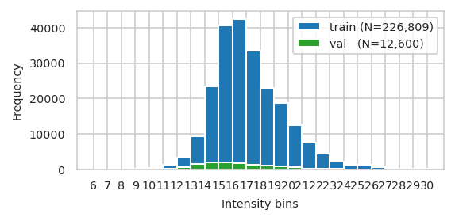
pimmslearn.plotting - INFO Saved Figures to runs/alzheimer_study/figures/0_3_splits_freq_stacked.pdf
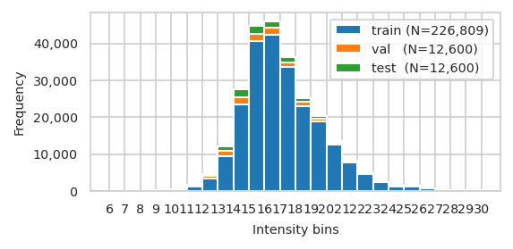
/home/runner/work/pimms/pimms/project/.snakemake/conda/55a2c7840b22b1fcd4b6a7d712ec2f3f_/lib/python3.12/site-packages/pimmslearn/pandas/__init__.py:320: FutureWarning:
The default of observed=False is deprecated and will be changed to True in a future version of pandas. Pass observed=False to retain current behavior or observed=True to adopt the future default and silence this warning.
/home/runner/work/pimms/pimms/project/.snakemake/conda/55a2c7840b22b1fcd4b6a7d712ec2f3f_/lib/python3.12/site-packages/pimmslearn/pandas/__init__.py:320: FutureWarning:
The default of observed=False is deprecated and will be changed to True in a future version of pandas. Pass observed=False to retain current behavior or observed=True to adopt the future default and silence this warning.
/home/runner/work/pimms/pimms/project/.snakemake/conda/55a2c7840b22b1fcd4b6a7d712ec2f3f_/lib/python3.12/site-packages/pimmslearn/pandas/__init__.py:320: FutureWarning:
The default of observed=False is deprecated and will be changed to True in a future version of pandas. Pass observed=False to retain current behavior or observed=True to adopt the future default and silence this warning.
| train | val | test | |
|---|---|---|---|
| bin | |||
| (6, 7] | 0 | 1 | 0 |
| (7, 8] | 2 | 0 | 2 |
| (8, 9] | 29 | 3 | 7 |
| (9, 10] | 103 | 15 | 18 |
| (10, 11] | 386 | 74 | 69 |
| (11, 12] | 1,275 | 239 | 217 |
| (12, 13] | 3,381 | 629 | 634 |
| (13, 14] | 9,347 | 1,420 | 1,394 |
| (14, 15] | 23,444 | 2,029 | 2,042 |
| (15, 16] | 40,706 | 1,963 | 2,054 |
| (16, 17] | 42,437 | 1,757 | 1,787 |
| (17, 18] | 33,540 | 1,401 | 1,333 |
| (18, 19] | 23,074 | 1,010 | 965 |
| (19, 20] | 18,767 | 827 | 792 |
| (20, 21] | 12,434 | 525 | 536 |
| (21, 22] | 7,632 | 282 | 320 |
| (22, 23] | 4,518 | 185 | 182 |
| (23, 24] | 2,262 | 95 | 102 |
| (24, 25] | 1,139 | 53 | 45 |
| (25, 26] | 1,284 | 58 | 50 |
| (26, 27] | 597 | 21 | 25 |
| (27, 28] | 84 | 1 | 3 |
| (28, 29] | 201 | 7 | 8 |
| (29, 30] | 145 | 5 | 13 |
pimmslearn.plotting - INFO Saved Figures to runs/alzheimer_study/figures/0_3_val_test_split_freq_stacked_.pdf
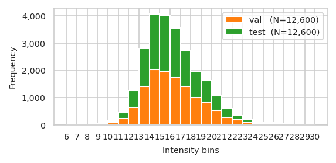
plot training data missing plots
pimmslearn.plotting - INFO Saved Figures to runs/alzheimer_study/figures/0_3_intensity_median_vs_prop_missing_scatter_train
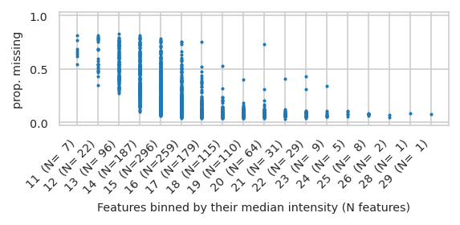
/home/runner/work/pimms/pimms/project/.snakemake/conda/55a2c7840b22b1fcd4b6a7d712ec2f3f_/lib/python3.12/site-packages/pimmslearn/plotting/data.py:323: FutureWarning:
Series.__getitem__ treating keys as positions is deprecated. In a future version, integer keys will always be treated as labels (consistent with DataFrame behavior). To access a value by position, use `ser.iloc[pos]`
pimmslearn.plotting - INFO Saved Figures to runs/alzheimer_study/figures/0_3_intensity_median_vs_prop_missing_boxplot_train
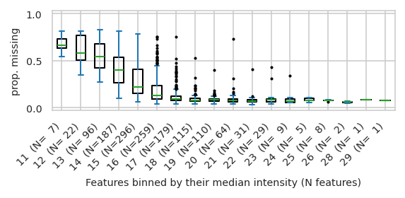
/tmp/ipykernel_3208/657883200.py:16: UserWarning:
To output multiple subplots, the figure containing the passed axes is being cleared.
pimmslearn.plotting - INFO Saved Figures to runs/alzheimer_study/figures/0_3_intensity_median_vs_prop_missing_boxplot_val_train
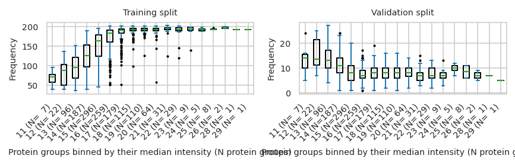
Save parameters#
root - INFO Dumped config to: runs/alzheimer_study/data_config.yaml
{'FN_INTENSITIES': 'https://raw.githubusercontent.com/RasmussenLab/njab/HEAD/docs/tutorial/data/alzheimer/proteome.csv',
'M': 1421,
'N': 210,
'column_names': ['protein groups'],
'data': PosixPath('runs/alzheimer_study/data'),
'feat_name_display': 'protein groups',
'feat_prevalence': 52,
'file_format': 'csv',
'fn_rawfile_metadata': 'https://raw.githubusercontent.com/RasmussenLab/njab/HEAD/docs/tutorial/data/alzheimer/meta.csv',
'folder_data': '',
'folder_experiment': PosixPath('runs/alzheimer_study'),
'frac_mnar': 0.25,
'frac_non_train': 0.1,
'index_col': [0],
'logarithm': 'log2',
'meta_cat_col': '_collection site',
'meta_date_col': 'PlaceholderTime',
'out_figures': PosixPath('runs/alzheimer_study/figures'),
'out_folder': PosixPath('runs/alzheimer_study'),
'out_metrics': PosixPath('runs/alzheimer_study'),
'out_models': PosixPath('runs/alzheimer_study'),
'out_preds': PosixPath('runs/alzheimer_study/preds'),
'prop_sample_w_sim': 1.0,
'random_state': 42,
'sample_N': False,
'sample_completeness': 710,
'select_N': None,
'use_every_nth_xtick': 1,
'used_samples': ['Sample_000',
'Sample_001',
'Sample_002',
'Sample_003',
'Sample_004',
'Sample_005',
'Sample_006',
'Sample_007',
'Sample_008',
'Sample_009',
'Sample_010',
'Sample_011',
'Sample_012',
'Sample_013',
'Sample_014',
'Sample_015',
'Sample_016',
'Sample_017',
'Sample_018',
'Sample_019',
'Sample_020',
'Sample_021',
'Sample_022',
'Sample_023',
'Sample_024',
'Sample_025',
'Sample_026',
'Sample_027',
'Sample_028',
'Sample_029',
'Sample_030',
'Sample_031',
'Sample_032',
'Sample_033',
'Sample_034',
'Sample_035',
'Sample_036',
'Sample_037',
'Sample_038',
'Sample_039',
'Sample_040',
'Sample_041',
'Sample_042',
'Sample_043',
'Sample_044',
'Sample_045',
'Sample_046',
'Sample_047',
'Sample_048',
'Sample_049',
'Sample_050',
'Sample_051',
'Sample_052',
'Sample_053',
'Sample_054',
'Sample_055',
'Sample_056',
'Sample_057',
'Sample_058',
'Sample_059',
'Sample_060',
'Sample_061',
'Sample_062',
'Sample_063',
'Sample_064',
'Sample_065',
'Sample_066',
'Sample_067',
'Sample_068',
'Sample_069',
'Sample_070',
'Sample_071',
'Sample_072',
'Sample_073',
'Sample_074',
'Sample_075',
'Sample_076',
'Sample_077',
'Sample_078',
'Sample_079',
'Sample_080',
'Sample_081',
'Sample_082',
'Sample_083',
'Sample_084',
'Sample_085',
'Sample_086',
'Sample_087',
'Sample_088',
'Sample_089',
'Sample_090',
'Sample_091',
'Sample_092',
'Sample_093',
'Sample_094',
'Sample_095',
'Sample_096',
'Sample_097',
'Sample_098',
'Sample_099',
'Sample_100',
'Sample_101',
'Sample_102',
'Sample_103',
'Sample_104',
'Sample_105',
'Sample_106',
'Sample_107',
'Sample_108',
'Sample_109',
'Sample_110',
'Sample_111',
'Sample_112',
'Sample_113',
'Sample_114',
'Sample_115',
'Sample_116',
'Sample_117',
'Sample_118',
'Sample_119',
'Sample_120',
'Sample_121',
'Sample_122',
'Sample_123',
'Sample_124',
'Sample_125',
'Sample_126',
'Sample_127',
'Sample_128',
'Sample_129',
'Sample_130',
'Sample_131',
'Sample_132',
'Sample_133',
'Sample_134',
'Sample_135',
'Sample_136',
'Sample_137',
'Sample_138',
'Sample_139',
'Sample_140',
'Sample_141',
'Sample_142',
'Sample_143',
'Sample_144',
'Sample_145',
'Sample_146',
'Sample_147',
'Sample_148',
'Sample_149',
'Sample_150',
'Sample_151',
'Sample_152',
'Sample_153',
'Sample_154',
'Sample_155',
'Sample_156',
'Sample_157',
'Sample_158',
'Sample_159',
'Sample_160',
'Sample_161',
'Sample_162',
'Sample_163',
'Sample_164',
'Sample_165',
'Sample_166',
'Sample_167',
'Sample_168',
'Sample_169',
'Sample_170',
'Sample_171',
'Sample_172',
'Sample_173',
'Sample_174',
'Sample_175',
'Sample_176',
'Sample_177',
'Sample_178',
'Sample_179',
'Sample_180',
'Sample_181',
'Sample_182',
'Sample_183',
'Sample_184',
'Sample_185',
'Sample_186',
'Sample_187',
'Sample_188',
'Sample_189',
'Sample_190',
'Sample_191',
'Sample_192',
'Sample_193',
'Sample_194',
'Sample_195',
'Sample_196',
'Sample_197',
'Sample_198',
'Sample_199',
'Sample_200',
'Sample_201',
'Sample_202',
'Sample_203',
'Sample_204',
'Sample_205',
'Sample_206',
'Sample_207',
'Sample_208',
'Sample_209']}
Saved Figures#
{'0_1_hist_features_per_sample': PosixPath('runs/alzheimer_study/figures/0_1_hist_features_per_sample'),
'0_1_feature_prevalence': PosixPath('runs/alzheimer_study/figures/0_1_feature_prevalence'),
'0_1_intensity_distribution_overall': PosixPath('runs/alzheimer_study/figures/0_1_intensity_distribution_overall'),
'0_1_intensity_median_vs_prop_missing_scatter': PosixPath('runs/alzheimer_study/figures/0_1_intensity_median_vs_prop_missing_scatter'),
'0_1_intensity_median_vs_prop_missing_boxplot': PosixPath('runs/alzheimer_study/figures/0_1_intensity_median_vs_prop_missing_boxplot'),
'0_1_pca_sample_by__collection_site': PosixPath('runs/alzheimer_study/figures/0_1_pca_sample_by__collection_site'),
'0_1_pca_sample_by_identified_protein_groups': PosixPath('runs/alzheimer_study/figures/0_1_pca_sample_by_identified_protein_groups.pdf'),
'0_1_pca_sample_by_identified_protein_groups_plotly': PosixPath('runs/alzheimer_study/figures/0_1_pca_sample_by_identified_protein_groups_plotly.pdf'),
'0_1_median_boxplot': PosixPath('runs/alzheimer_study/figures/0_1_median_boxplot'),
'0_2_mnar_mcar_histograms': PosixPath('runs/alzheimer_study/figures/0_2_mnar_mcar_histograms.pdf'),
'0_3_val_over_train_split.pdf': PosixPath('runs/alzheimer_study/figures/0_3_val_over_train_split.pdf'),
'0_3_splits_freq_stacked.pdf': PosixPath('runs/alzheimer_study/figures/0_3_splits_freq_stacked.pdf'),
'0_3_val_test_split_freq_stacked_.pdf': PosixPath('runs/alzheimer_study/figures/0_3_val_test_split_freq_stacked_.pdf'),
'0_3_intensity_median_vs_prop_missing_scatter_train': PosixPath('runs/alzheimer_study/figures/0_3_intensity_median_vs_prop_missing_scatter_train'),
'0_3_intensity_median_vs_prop_missing_boxplot_train': PosixPath('runs/alzheimer_study/figures/0_3_intensity_median_vs_prop_missing_boxplot_train'),
'0_3_intensity_median_vs_prop_missing_boxplot_val_train': PosixPath('runs/alzheimer_study/figures/0_3_intensity_median_vs_prop_missing_boxplot_val_train')}
Saved dumps
{'01_0_data_stats.xlsx': 'runs/alzheimer_study/01_0_data_stats.xlsx',
'freq_features.json': PosixPath('runs/alzheimer_study/data/freq_features.json'),
'freq_features.pkl': PosixPath('runs/alzheimer_study/data/freq_features.pkl'),
'test_y.csv': 'runs/alzheimer_study/data/test_y.csv',
'train_X.csv': 'runs/alzheimer_study/data/train_X.csv',
'val_y.csv': 'runs/alzheimer_study/data/val_y.csv'}